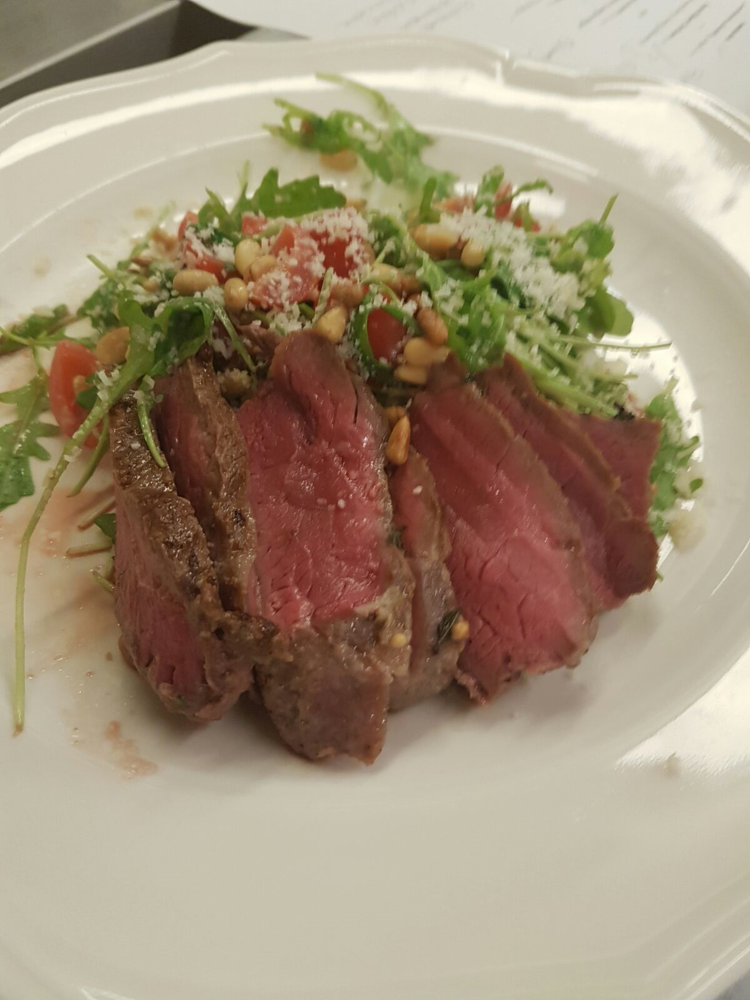
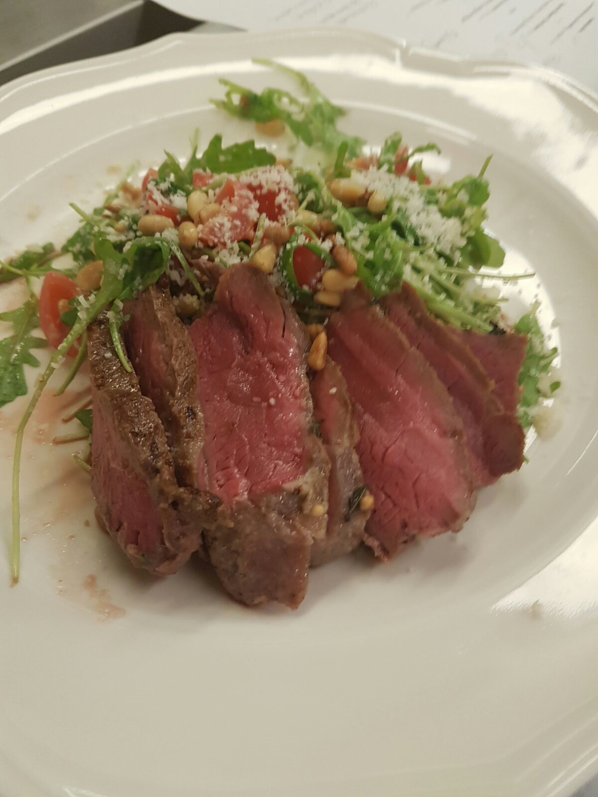

Bordán Étterem
Legjobb hely a városban

Valahol az osztrák alpokban

etterem@mail.au

www.etterem.au
A Főszakács

Amit enni lehet

Legjobb hely a városban
Valahol az osztrák alpokban
etterem@mail.au
www.etterem.au
Amit enni lehet

Fokhagymás piritós
Birka pörkölt
Gulyás leves
Palacsinta
Jégkreém